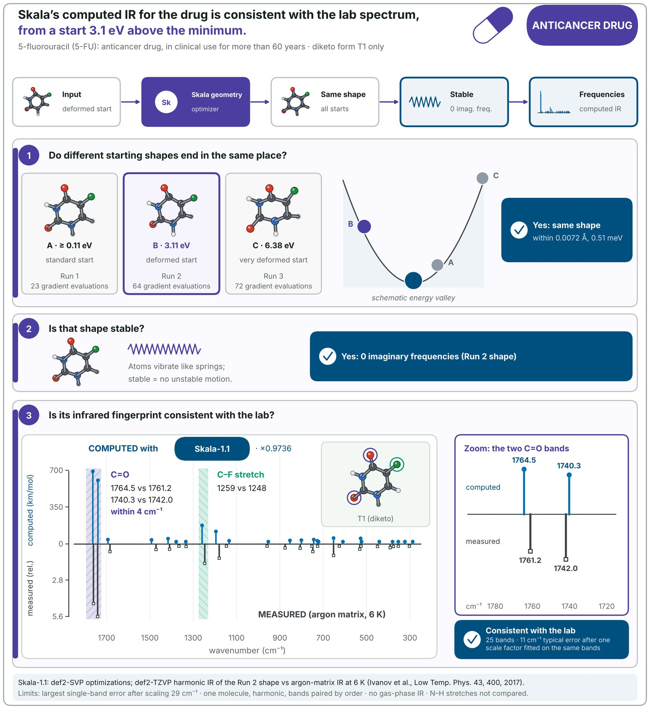

Cite as: The infrared spectrum of the anticancer drug 5-fluorouracil computed with Skala, a deep-learning density functional, is consistent with a published laboratory measurement. IOP BPEX. Anonymous.
5-fluorouracil: geometry optimization and computed infrared fingerprint
The computed infrared fingerprint of 5-fluorouracil is consistent with the laboratory measurement, including when the optimization starts from a structure deformed to 3.1 eV above the minimum.
5-fluorouracil (5-FU) is an anticancer drug in clinical use for more than 60 years. We ran the same open-source workflow used for the two annulenes on this drug, unchanged. All supporting material is provided here: code, data, figures and plain-language explainers.
Skala-1.1C₄H₃FN₂O₂ · 12 atoms0 imaginary frequencies25 bands comparedReproducible results

Reported values are recomputable from the deposited data
The reported results do not rest on figures alone. Each value can be independently recomputed from the deposited data, most within minutes on a standard computer, without a GPU, an account or an API key.
Recomputation of the infrared statistics
A single script reads the experimental and computed band lists and returns the 25 paired bands, the scale factor 0.9736, a mean absolute error of 11.0 cm⁻¹ (maximum 29.2 cm⁻¹) and a rank correlation of 0.86.
Integrity checks and figure regeneration
data/MANIFEST.csv lists every deposited file with its size and SHA-256 checksum. The vibrational figures are regenerated from the 73 stored force files in about 10 minutes.
Optimization trajectories
The step log, summary and final structure of each of the three optimization runs are deposited in the data folder.
Reproduction protocol → Provenance of each reported value → Reproducible data tables →
A full rerun of the calculations requires a cloud GPU, Skala-1.1 from its developers and an API key for the language-model service called by the notebooks. A rerun is expected to reproduce the structure and frequencies within small numerical tolerances, not identical log files, because GPU arithmetic is not bit-for-bit repeatable.
Results in brief
Do different starting structures converge to the same minimum?
Yes. A standard start and two deliberately deformed starts (3.1 eV and 6.4 eV above the final energy) converge to one structure, within 0.0072 Å and 0.51 meV.
Supporting evidence →Is that structure stable?
Yes. The vibrational analysis finds 0 imaginary frequencies: all 30 vibrations are real, so the structure is a local minimum of the energy surface.
Supporting evidence →Is its infrared fingerprint consistent with the laboratory spectrum?
Yes. Against a measured argon-matrix spectrum, 25 bands give a typical error of 11 cm⁻¹ after one scale factor. Both C=O bands are within 4 cm⁻¹.
Supporting evidence →Site contents
Scope and limitations. The study covers one molecule and uses the harmonic approximation. The reference spectrum was measured in an argon matrix at 6 K, not in the gas phase or in solution. The scale factor was fitted on the same 25 bands used to evaluate it (in-sample). No claim is made that Skala-1.1 is more accurate than other methods: no other functional was evaluated. All limits →